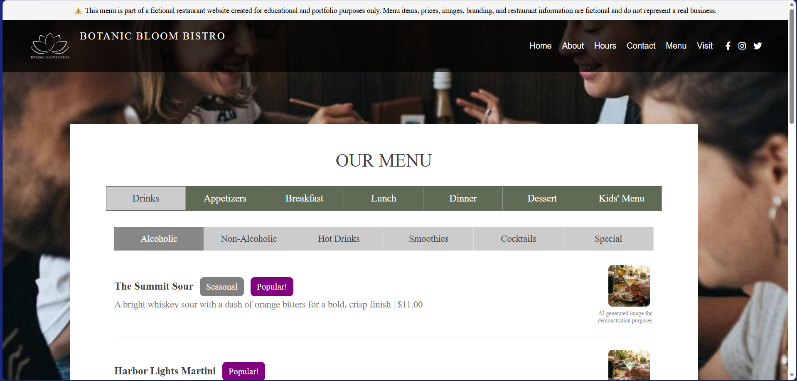

Visit the Live GitHub Demo: Botanic Bloom Bistro Website
Context: The Botanic Bloom Bistro website is a responsive front-end web application programmed for an original restaurant business concept. It is designed to explore how realistic a conceptual web platform can feel through intuitive UI architecture and simulated interactive features. Built around a custom visual identity and logo, the application prioritizes fluid responsiveness and user-centered design across all screen sizes, including a mobile hamburger navigation menu. To enhance user interaction, the site incorporates advanced HTML5 form controls— utilizing specialized input types like datetime-local and numerical fields— to deliver a seamless, simulated reservation request workflow. At the core of the digital menu experience is a custom state management system, utilizing an interactive tab-based menu layout that supports instant main- and sub-category switching, clean state resets, and dynamic item displays complete with prices, descriptions, images, and visual tags such as "Popular" and "Seasonal" badges.
Goal: To create an authentic digital experience for an original restaurant business concept by implementing intuitive user flows and simulated interactive features, including custom reservations forms, strategic CTAs, and a tabbed, digital menu complete with visual elements.
Process & Iterations:
The website did not take any real concept planning beforehand. I simply had an idea, looked at inspiration, and dove headfirst into programming. Additionally, ChatGPT and Gemini were utilized to generate all the repetitive menu data and descriptions; as well as the images themselves, in order to keep the main focus on developing fluid layouts, interactive elements, and tabbed state management.

Step 1
Sparked by real-world restaurant web inspiration, dove directly into code without a formal design phase to establish the site's layout, header structure, content, and navigation flow.

Step 2
Programmed user-centered front-end features, focusing on intuitive user flows, call-to-action (CTA) placements, and simulated reservation forms utilizing specialized input types.

Step 3
Built a dynamic tabbed menu system, handling instant category and sub-category switching and clean state resets. Then, utilized AI assistants to handle the mass generation of realistic menu item descriptions, pricing, images, and visual tag attributes.
The Challenges:
- Managing Menu Component State: Programming a client-side tabbed menu system capable of handling immediate category and sub-category switching, while ensuring smooth, clean state resets across all sections.
- Building Intuitive User-Centric Workflows: Creating seamless user flows for interactive site features– such as simulated reservation requests.
- High-Density Content Integration: Efficiently utilizing AI-assistants to populate all of the menu items with realistic titles, descriptions, pricing, images, and visual tags.
Key Features & Highlights:
- Fluid Responsive Architecture: Developed a mobile-first, responsive web layout featuring custom styling, adapted breakpoints, and a hamburger navigation menu.
- HTML5 Form Controls: Implemented a simulated reservation request form, utilizing intuitive input types, including datetime-local and numerical fields for user-centered interaction.
- Tabbed Menu System & State Management: Programmed an interactive online menu interface with instant category filtering and clean state resets.
- UI Visual Badging: Designed dynamic menu item cards featuring dish descriptions, pricing, images, and custom status tags such as "Popular" and "Seasonal".